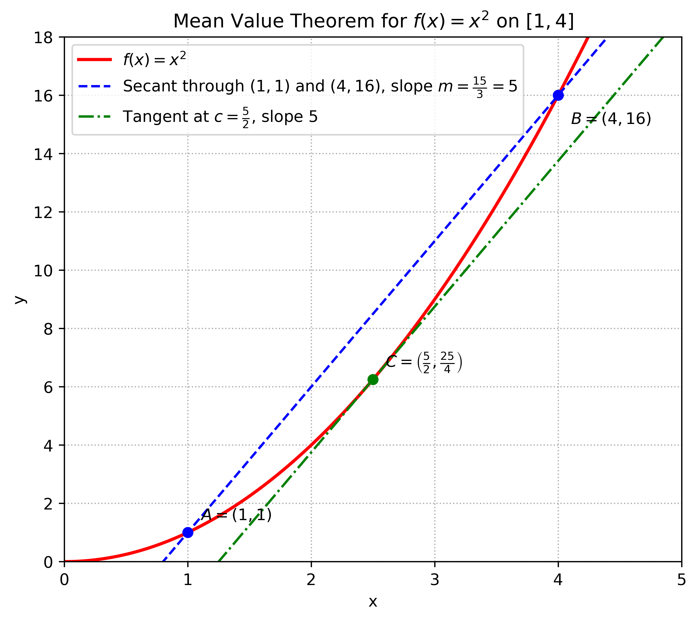

2.9 Translating English to Symbolic Logic¶
In writing (and reading) proofs of theorems, we must always be alert to the logical structure and meanings of the sentences. Sometimes it is necessary or helpful to parse them into expressions involving logic symbols. This may be done mentally or on scratch paper, or occasionally even explicitly within the body of a proof. The purpose of this section is to give you sufficient practice in translating English sentences into symbolic form so that you can better understand their logical structure. Here are some examples:
Example 2.8: Consider the Mean Value Theorem from Calculus:
If \(f\) is continuous on the closed interval \([a, b]\) and differentiable on the open interval \((a,b)\), then there is a number \(c \in (a, b)\) for which \(f^{\prime}(c) = \dfrac{f(b) - f(a)}{b - a}\).
Mean Value Theorem
For a function \(f(x)\) that is continuous along the closed interval \([a,b]\) and differentiable on the open interval \((a,b)\), there exists a value \(c \in (a,b)\) such that the slope of the tangent line at \(x=c\) ( given by derivation \(f^{\prime}(c)\)) equals the slope of the secant line (given by \(\dfrac{f(b) - f(a)}{b - a}\)). Note that the secant line is a line that cuts through a curve at two points. In other words: the tangent line at \(f(c)\) is PARALLEL to the secant line formed by the line connecting the endpoints \([a,b]\) of the interval (i.e. the line joining \(a, f(a)\) and \((b,f(b))\)).
For example: \(f(x) = x^{2}\) \(f^{\prime}(x) = 2x\) \([a,b] = [1,4]\) Then: \(f^{\prime}(c) = \dfrac{f(4) - f(1)}{4 - 1}\) \(f^{\prime}(c) = \dfrac{15}{3} = 5\) \(2c = 5\), so \(c = \frac{5}{2} \in (1,4)\)
The derivative \(f^{\prime}(c)\) equals the average rate of change of \(f\) from \(a\) to \(b\).
Continuous on \([a,b]\) means the graph has no breaks, jumps, or holes anywhere from \(a\) to \(b\), including at the endpoints \(a\) and \(b\). We need the endpoints included because the theorem compares the values \(f(a)\) and \(f(b)\). The secant line slope \(\dfrac{f(b) - f(a)}{b - a}\) uses those endpoint values directly, so the function must behave nicely all the way across the closed interval.
Differentiable on \((a,b)\) means \(f(x)\) has a derivative at every interior point between \(a\) and \(b\). We only ask for differentiability on the open interval because the conclusion is about some point \(c \in (a,b)\), not at the endpoints. Also, in ordinary calculus, differentiability at an endpoint is awkward: at \(a\), you can only take a derivative from the right, and at \(b\), only from the left. The usual derivative is defined using points on both sides, so it naturally applies to interior points, not endpoints. So the theorem uses exactly the weakest natural assumptions it needs.
Think of driving from time \(a\) to time \(b\): \(\dfrac{f(b) - f(a)}{b - a}\) is your average speed, and \(f^{\prime}(c)\) is your instantaneous speed at time \(c\). The theorem says: somewhere between the endpoints, the curve must momentarily move at exactly its overall average pace.
{kind=link}

#!/usr/bin/env -S uv run
# /// script
# dependencies = [
# "numpy",
# "matplotlib",
# "uuid",
# ]
# ///
# Illustrate the Mean Value Theorem for f(x) = x^2 on [1, 4]
import matplotlib
matplotlib.use("Agg") # non-interactive backend
import uuid
import numpy as np
import matplotlib.pyplot as plt
# Function and derivative
def f(x):
return x**2
def fp(x):
return 2*x
# Interval [a, b]
a = 1.0
b = 4.0
fa = f(a)
fb = f(b)
# Secant slope
m_sec = (fb - fa) / (b - a)
# Solve f'(c) = m_sec
c = m_sec / 2.0
fc = f(c)
# Plot data
x = np.linspace(0, 5, 500)
y = f(x)
# Secant and tangent lines
secant_y = fa + m_sec * (x - a)
tangent_y = fc + m_sec * (x - c)
plt.figure(figsize=(7, 6))
plt.plot(x, y, linewidth=2, color="red", label=r"$f(x)=x^2$")
plt.plot(x, secant_y, linewidth=1.5, color="blue", linestyle="--", label=rf"Secant through $(1,1)$ and $(4,16)$, slope $m=\frac{{15}}{{3}}=5$")
plt.plot(x, tangent_y, linewidth=1.5, color="green", linestyle="-.", label=rf"Tangent at $c=\frac{{5}}{{2}}$, slope $5$")
# Mark the special points
plt.scatter([a, b], [fa, fb], color="blue", zorder=5)
plt.scatter([c], [fc], color="green", zorder=6)
plt.annotate(r"$A=(1,1)$", (a, fa), textcoords="offset points", xytext=(8, 8))
plt.annotate(r"$B=(4,16)$", (b, fb), textcoords="offset points", xytext=(8, -18))
plt.annotate(r"$C=\left(\frac{5}{2},\frac{25}{4}\right)$", (c, fc), textcoords="offset points", xytext=(8, 8))
# Axes and formatting
plt.axhline(0, color="black", linewidth=0.5)
plt.axvline(0, color="black", linewidth=0.5)
plt.xlim(0, 5)
plt.ylim(0, 18)
plt.title(r"Mean Value Theorem for $f(x)=x^2$ on $[1,4]$")
plt.xlabel("x")
plt.ylabel("y")
plt.grid(True, linestyle=":")
plt.legend(loc="upper left")
# plt.show() # for interactive environment (jupyter)
# Generate UUID filename
uid = uuid.uuid4().hex
# Save high-resolution outputs
plt.savefig(f"{uid}.png", dpi=600, bbox_inches="tight")
plt.savefig(f"{uid}.svg", bbox_inches="tight")
plt.close()
chmod +x plot.py
uv run plot.py
Here is a translation to symbolic form:
Example 2.9: Consider Goldbach’s conjecture, from Section 2.1:
Every even integer greater than 2 is the sum of two primes.
This can be translated in the following ways, where \(P\) is the set of prime numbers and \(X = \{ 4 , 6 , 8 , 1 0 , \ldots \}\) is the set of even integers greater than 2.
These translations of Goldbach’s conjecture illustrate an important point. The first has the basic structure \(( n \in X ) \Rightarrow Q(n)\) and the second has structure \(\forall \ n \in X , \ Q(n)\), yet they have exactly the same meaning. This is significant. Every universally quantified statement can be expressed as a conditional statement.
Fact 2.2: Suppose \(X\) is a set and \(Q(x)\) is a statement about \(x\) for each \(x \in X\). The following statements mean the same thing:
This fact is significant because so many theorems have the form of a conditional statement. (The Mean Value Theorem is an example.) In proving a theorem we have to think carefully about what it says. Sometimes a theorem will be expressed as a universally quantified statement, but it will be more convenient to think of it as a conditional statement. Understanding the above fact allows us to switch between the two forms.
The section closes with some final points. In translating a statement, be attentive to its intended meaning. Don’t jump into, for example, automatically replacing every “and” with \(\wedge\) and “or” with \(\lor\). An example:
At least one of the integers \(x\) and \(y\) is even.
Don’t be led astray by the presence of the word “and.” The meaning of the statement is that one or both of the numbers is even, so it should be translated with “or,” not “and”:
(\(x\) is even) \(\lor\) (\(y\) is even).
Finally, the logical meaning of “but” can be captured by “and.” The sentence “The integer \(x\) is even, but the integer \(y\) is odd,” is translated as
(\(x\) is even) \(\land\) (\(y\) is odd).
Exercises for Section 2.9¶
Translate each of the following sentences into symbolic logic.
If \(f\) is a polynomial and its degree is greater than 2, then \(f^{\prime}\) is not constant.
Answer
\((P \land Q) \Rightarrow R\)
\(P\) : \(f\) is a polynomial,
\(Q\) : \(f\) has degree greater than 2,
\(R\) : \(f^{\prime}\) is not constant.
This statement is true: if the degree of a polynomial \(f = n > 2\), then the degree of \(f^{\prime} = n-1 > 1\). A polynomial of degree \(> 1\) is not constant.
The number \(x\) is positive but the number \(y\) is not positive.
Answer
\((x > 0) \land \sim (y > 0)\) This is an open sentence because \(x\) and \(y\) are free variables. Its truth depends on the actual values of \(x\) and \(y\).
If \(x\) is prime, then \(\sqrt{x}\) is not a rational number.
Answer
\(P \Rightarrow \sim Q\)
\(P\) : \(x\) is prime,
\(Q\) : \(\sqrt{x}\) is a rational number.
This statement is true: the square root of a prime is always irrational. Assume for contradiction that \(\sqrt{p}\) is rational. That means \(\sqrt{p} = \frac{a}{b}\) with \(a,b\) integers with no common factor (so the fraction cannot be simplified and is in lowest terms), so \(pb^2 = a^2\). Now \(a^2\) is divisible by \(p\) (notation: \(p|a\)). For a prime \(p\) to divide a square \(a^2\), it must also divide the number itself \(a\). Assume \(a = pk\) for some integer \(k\). Substitute in \(pb^2 = a^2\), so \(pb^2 = (pk)^2 = p^{2}k^{2}\). Divide by \(p\) to get \(b^2 = pk^2\). Now \(b^2\) is divisible by \(p\) (notation: \(p|b\)) and again for a prime \(p\) to divide a square \(b^2\), it must also divide the number itself \(b\). We have now shown that both \(a\) and \(b\) are divisible by \(p\), meaning that they both have a common factor and that the fraction \(\frac{a}{b}\) was not in lowest terms. A reduced fraction cannot have the numerator and the denominator both divisible by the same prime. Therefore the assumption was false and \(\sqrt{p}\) is irrational. A simple example is \(\sqrt{2}\): if \(\sqrt{2} = \frac{a}{b}\), the same reasoning shows that both \(a\) and \(b\) must be even, which is impossible if the fraction was reduced.
For every prime number \(p\) there is another prime number \(q\) with \(q > p\).
Answer
\(\forall \ p \in P, \ \exists \ q \in P, \ q>p\)
\(P\) is the set of all prime numbers \(\{2,3,5,7,11,13,\ldots\}\)
This statement is true. This is Euclid’s theorem: there are infinitely many primes.
For every positive number \(\varepsilon\), there is a positive number \(\delta\) for which \(| x - a | < \delta\) implies \(| f(x) - f(a) | < \varepsilon\).
Answer
\(\forall \ \varepsilon \in \mathbb{R}, \ \varepsilon > 0, \ \exists \ \delta \in \mathbb{R}, \ \delta > 0, \ (|x-a|<\delta) \Rightarrow (|f(x) - f(a)|<\varepsilon)\) This is an open sentence, depending on the values for \(f\) and \(a\). This is exactly the statement that \(f\) is continuous at \(a\).
For every positive number \(\varepsilon\) there is a positive number \(M\) for which \(| f(x) - b | < \varepsilon\) whenever \(x > M\).
Answer
\(\forall \ \varepsilon \in \mathbb{R}, \ \varepsilon > 0, \ \exists \ M \in \mathbb{R}, \ M > 0, \ (x > M) \Rightarrow (|f(x) - b|<\varepsilon)\) This is an open sentence, depending on the values for \(f\) and \(b\). This is exactly the statement \(\displaystyle \lim_{x \rightarrow \infty} f(x) = b\).
There exists a real number \(a\) for which \(a + x = x\) for every real number \(x\).
Answer
\(\exists \ a \in \mathbb{R}, \ \forall \ x \in \mathbb{R}, \ a + x = x\) This statement is true. Consider \(a=0\). Then \(0+x=x\) for every real \(x\).
I don’t eat anything that has a face.
Answer
\(\forall \ x, F(x) \Rightarrow \sim E(x)\)
\(F(x)\) : \(x\) has a face,
\(E(x)\) : \(x\) is eaten.
The truth of this statement depends on who the speaker is and what they eat.
If \(x\) is a rational number and \(x \neq 0\), then tan\((x)\) is not a rational number.
Answer
\(((x \in \mathbb{Q} \land (x \neq 0)) \Rightarrow (\tan(x) \not \in \mathbb{Q})\) This statement is true if angles are measured in radians. It is false if angles are measured in degrees, since \(\tan(45°) = 1\).
If \(\sin(x) < 0\), then it is not the case that \(0 \leq x \leq \pi\).
Answer
\(\forall \ x \in \mathbb{R}, \ (\sin(x)<0) \Rightarrow \ \sim (0 \leq x \leq \pi)\) This statement is true. On the interval \([0,\pi]\), we have \(\sin(x)\ge 0\). So if \(\sin(x)<0\), \(x\) cannot lie in that interval.
There is a Providence that protects idiots, drunkards, children and the United States of America. (Otto von Bismarck)
Answer
Let \(R\) be union of the set of idiots, the set of drunkards, the set of children, and the set consisting of the USA. Let \(P\) be the open sentence \(P(x)\) : \(x\) is a Providence. Let \(S\) be the open sentence \(S(x, y)\) : \(x\) protects \(y\). Then the translation is \(\exists \ x, \ \forall \ y \in R, \ P(x) \land S(x,y)\). (Notice that, although this is mathematically correct, some humor has been lost in the translation.)
You can fool some of the people all of the time, and you can fool all of the people some of the time, but you can’t fool all of the people all of the time. (Abraham Lincoln)
Answer
\((\exists \ p, \ \forall \ t, \ F(p,t)) \land (\forall \ p, \ \exists \ t, \ F(p,t)) \ \land \sim (\forall \ p, \ \forall \ t, \ F(p,t))\)
\(F(p,t)\) : person \(p\) can be fooled at time \(t\).
Everything is funny as long as it is happening to somebody else. (Will Rogers)
Answer
\(\forall \ x, \ (\sim M(x) \land S(x)) \Rightarrow F(x)\).
\(M(x)\) : \(x\) is happening to me,
\(S(x)\) : \(x\) is happening to somebody else,
\(F(x)\) : \(x\) is funny.